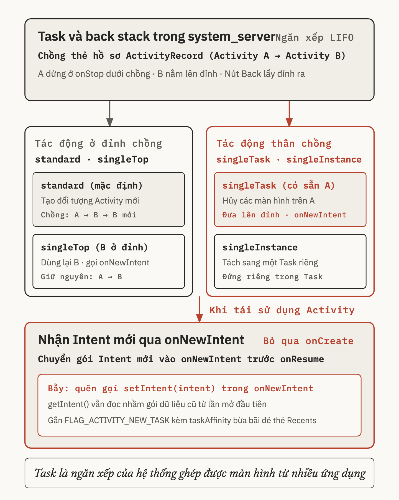

Task & back stack
Bản 30 giây
Khi bạn mở trang sản phẩm rồi xem giỏ hàng, Android xếp các màn hình chồng lên nhau theo thứ tự mở trước nằm dưới. Bấm nút Back sẽ lấy màn hình trên cùng ra hủy và đưa màn hình ngay bên dưới quay lại. Nhờ thuộc tính launchMode, bạn quy định được màn hình mới sẽ chồng thêm hay dùng lại bản có sẵn.
Cần biết trước
Vấn đề buộc nó ra đời
Trên máy tính truyền thống, mỗi ứng dụng tự quản lý cửa sổ của mình và không cho ứng dụng khác chèn màn hình vào. Nhưng trên điện thoại từ bản Android 1.0 (2008), một việc của người dùng thường đi xuyên qua nhiều ứng dụng khác nhau.
Ví dụ khi đang soạn thư và mở thư viện ảnh để đính kèm, bạn mong bấm nút Back là quay thẳng về bức thư. Nếu mỗi ứng dụng giữ một danh sách lịch sử riêng, nút Back sẽ bị loạn và không biết phải lùi về đâu.
Ngoài ra, nếu bấm thông báo nhiều lần mà hệ thống cứ tạo chồng thêm màn hình giống hệt nhau, bộ nhớ sẽ nhanh cạn. Kỹ sư Android tạo ra Task và back stack do hệ thống quản lý chung. Họ cũng thêm bốn chế độ launchMode để kiểm soát việc tái sử dụng màn hình.
Nó thực sự là cái gì
Task không phải là một tiến trình hay một gói ứng dụng đơn lẻ trong bộ nhớ. Thực chất, nó là một chồng thẻ hồ sơ (ActivityRecord) nằm trong tiến trình hệ thống system_server. Chồng thẻ này có thể chứa các Activity từ nhiều ứng dụng khác nhau. Các màn hình trong back stack không đổi thứ tự, chỉ đẩy vào hoặc lấy khỏi đỉnh theo nguyên tắc vào sau ra trước (LIFO).
Cơ chế

Khi Activity A mở Activity B, A dừng ở trạng thái onStop và giữ nguyên trong back stack, còn B nằm lên đỉnh chồng. Ở chế độ mặc định standard, mỗi lệnh mở đều tạo một đối tượng Activity mới tinh trên đỉnh. Với singleTop, nếu đúng loại Activity đó đang nằm sẵn ở đỉnh chồng, hệ thống dùng lại nó và chuyển Intent mới qua hàm onNewIntent. Với singleTask, nếu Activity đã có dưới chồng, hệ thống hủy các màn hình trên nó để đưa lên đỉnh, còn singleInstance tách Task riêng.
Đánh đổi
Chồng back stack xuyên ứng dụng giúp nút Back hoạt động liền mạch đúng theo dòng việc người dùng vừa làm. Đổi lại, mọi màn hình nằm dưới chồng vẫn giữ nguyên đối tượng trong RAM. Chồng quá cao sẽ làm tăng nguy cơ hệ thống thu hồi tiến trình. Nếu lạm dụng singleTask hay singleInstance, người dùng bấm Back sẽ thấy màn hình nhảy cóc hoặc thoát thẳng ra ngoài.
Nguyên lý gốc
Quản lý lịch sử điều hướng bằng cấu trúc ngăn xếp vào sau ra trước (LIFO). Tại mỗi thời điểm, chỉ phần tử nằm trên đỉnh ngăn xếp mới được tương tác.
Key insight
Một
Taskkhông gắn chặt với một ứng dụng, mà là một ngăn xếp của hệ thống ghép được màn hình từ nhiều ứng dụng.
Khuôn mẫu chuẩn
class OrderDetailActivity : ComponentActivity() {
override fun onCreate(savedInstanceState: Bundle?) {
super.onCreate(savedInstanceState)
renderOrder(intent)
}
override fun onNewIntent(intent: Intent) {
super.onNewIntent(intent)
setIntent(intent)
renderOrder(intent)
}
}
Bẫy & ranh giới
Bẫy phổ biến nhất khi dùng singleTop hoặc singleTask là quên gọi setIntent(intent) bên trong hàm onNewIntent. Khi đó, mọi chỗ trong màn hình gọi hàm getIntent() sẽ vẫn đọc nhầm gói dữ liệu cũ từ lần mở đầu tiên. Cũng đừng gắn cờ FLAG_ACTIVITY_NEW_TASK kèm taskAffinity bừa bãi vì sẽ đẻ ra nhiều thẻ trùng lặp trong màn hình đa nhiệm (Recents). Triệu chứng khi mắc bẫy là bấm thông báo mới vẫn hiện bài cũ, hoặc phải bấm Back nhiều lần mới thoát được trang.
Câu hỏi thực chiến
Hỏi: Đặt launchMode là singleTop thì có đảm bảo trong bộ nhớ chỉ có duy nhất một bản của Activity đó không?
Không. Chế độ singleTop chỉ dùng lại màn hình cũ nếu lúc đó nó đang nằm ngay trên đỉnh của back stack. Nếu màn hình A mở B rồi B lại gọi mở A, hệ thống vẫn tạo thêm bản A thứ hai đè lên B.
Hỏi: Khi một Activity đang mở sẵn được tái sử dụng qua singleTop hoặc singleTask, hàm onCreate có chạy lại không?
Không. Hệ thống bỏ qua onCreate và chuyển gói Intent mới thẳng vào hàm onNewIntent trước khi gọi onResume. Nếu bạn chỉ viết code đọc dữ liệu Intent ở trong onCreate, màn hình sẽ không cập nhật được nội dung mới.
Hỏi: Khi người dùng bấm nút Back để thoát khỏi màn hình hiện tại, dữ liệu của màn hình đó giữ lại ở đâu?
Màn hình trên đỉnh sẽ bị lấy khỏi back stack, chạy tới onDestroy và xóa sạch khỏi bộ nhớ cùng với ViewModel của nó. Khi bạn bấm Back, hệ thống hiểu là bạn muốn bỏ hẳn màn hình đó nên cũng không giữ lại gói trạng thái onSaveInstanceState.
Ý bắt buộc khi giải thích lại
- Giải thích được cấu trúc LIFO của back stack trong system_server và vì sao một Task chứa được Activity từ nhiều ứng dụng.
- Phân biệt được bốn chế độ standard, singleTop, singleTask và singleInstance tác động lên đỉnh và thân của back stack thế nào.
- Nêu được bẫy đọc nhầm dữ liệu cũ nếu quên gọi setIntent(intent) bên trong hàm onNewIntent khi tái sử dụng Activity.
- Viết lại được khuôn mẫu chuẩn từ trí nhớ.
Nguồn
- Tasks and the back stack — Android Developers
- Activity element in AndroidManifest.xml — Android Developers
- Activity API reference — Android Developers